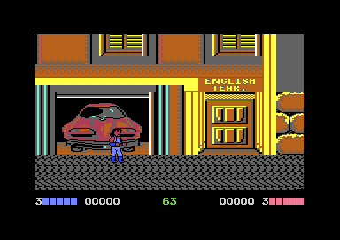

<meta charset="utf-8">
<meta name="viewport" content="width=device-width, initial-scale=1">
<title>{{title}}</title>
<link rel="stylesheet" href="../../lib/site.css">
<style>
.dd-pair{display:grid;grid-template-columns:repeat(2,minmax(0,1fr));gap:1rem}
.dd-pair figure{margin:0}.dd-pair canvas,.dd-pair img{display:block;width:100%;height:auto;image-rendering:pixelated}
.dd-controls{display:flex;flex-wrap:wrap;gap:.7rem;align-items:center}
.dd-controls select{max-width:100%}.dd-controls label{display:flex;gap:.5rem;align-items:center}
@media(max-width:650px){.dd-pair{grid-template-columns:1fr}}
</style>
<!-- tabs -->
<header class="hero"><p class="eyebrow">{{year}} · {{publisher}}</p><h1>{{title}}</h1><p class="sub">Two C64 disks show different names on the title screen. Inside both is the same street-fighting engine and the same six level files.</p></header>
<main class="wrap">

<section id="editions"><h2>Two title screens</h2>
<div class="plate dd-pair">
<figure><figcaption>AD disk. The title credits Arcadia Software.</figcaption></figure>
<figure><figcaption>TO disk. The title credits Mastertronic.</figcaption></figure>
</div>
<p>The two disks are named here by their directory identifiers, AD and TO. Both titles name Binary Design for the conversion and Technos Japan for the licence. Each lets you start with one player or two.</p>
</section>
<section id="opening" data-part="resident"><h2>Outside the garage</h2>
<div class="plate dd-pair"><figure><figcaption>The opening scene, captured on the TO disk in VICE.</figcaption></figure></div>
<p>The lone fighter moves with a joystick in port 2. The input routine at <code><a href="source-resident.html#3450">$3450</a></code> reads that port. On both disks, holding right moves the fighter along the street, while down moves him toward the bottom of the screen.</p>
<p>The game draws the street in 8 × 8 tiles. The routine at <code><a href="source-resident.html#6049">$6049</a></code> copies 40 characters at a time from the map, then jumps ahead to the next row. The <a href="levels.html">level browser</a> compares the background with a fixed gameplay capture.</p>
<p>Press 2 at the title for two players. The first fighter stays on port 2 and the second uses port 1. Hold fire and push the joystick to pick a move. Even fire on its own can select a different move when you turn around. Outside the garage, an unarmed fighter facing left uses <a href="source-resident.html#44A1">one strike routine</a> while the same input facing right uses <a href="source-resident.html#4784">a different strike routine</a>. Compare the poses on the <a href="graphics.html#player-poses">Graphics tab</a>.</p>
</section>
<section id="sound" data-part="resident"><h2>Title music and SID cues</h2>
<div id="dd-sound" class="plate"><p>Loading the music driver.</p></div>
<p>The <a href="source-title-to.html#1AE0">title</a> and the <a href="source-ending.html#B502">ending</a> share a tune. Clearing a scene queues a short tune before the next load. On the PAL C64, the sound driver runs about 50 times a second. This player follows the game’s original music routine and models the C64’s three voices.</p>
<p>The <a href="source-resident.html#0C20">sound table</a> points to a sequence for each voice. Try Hit, which plays when the game registers certain strikes against a fighter. The engine also chooses <a href="source-resident.html#42CF">two different effects for weapon attacks</a> according to what the fighter carries.</p>
</section>
<section id="stage-clear" data-part="resident"><h2>Clearing the way to the next scene</h2>
<p>At the end of a scene, the <a href="source-resident.html#58E5">clear check</a> waits for both enemy slots and the pending spawns to clear. It starts the victory cue and a short wait. The <a href="source-resident.html#5930">next-level request</a> then advances the disk resource number. After it clears L5, the last of six scene files, the game reads the ending from disk.</p>
<p>In the <a href="levels.html?scene=6#scenes">ending</a>, the walking figure stops. Fire on either joystick then takes you back to the title.</p>
</section>
</main>
<script src="../../lib/c64.js"></script>
<script src="../../lib/cpu6502.js"></script>
<script src="../../lib/sid.js"></script>
<script>
// dd-sid-driver
function createDoubleDragonDriver(program, C64Cpu) {
  const sid = new Uint8Array(25);
  const writes = [];
  const times = [];
  let cpu;
  let startCycle;
  let firstFrame;
  const io = {
    read(address) {
      throw new Error('Unexpected sound I/O read at $' + address.toString(16));
    },
    write(address, value) {
      const register = address - 0xD400;
      if (register < 0 || register >= sid.length) {
        throw new Error('Unexpected sound I/O write at $' + address.toString(16));
      }
      sid[register] = value;
      writes.push(register, value);
      times.push(cpu.cycles - startCycle);
    }
  };
  function clearWrites() {
    writes.length = 0;
    times.length = 0;
    startCycle = cpu.cycles;
  }
  return {
    sid, writes, times,
    init(selection) {
      const memory = new Uint8Array(65536);
      memory.set(program, 0x0344);
      cpu = new C64Cpu.CPU(memory, {port: 0x35, io});
      sid.fill(0);
      clearWrites();
      cpu.call(0x040E, {x: selection});
      firstFrame = true;
    },
    play() {
      if (!firstFrame) clearWrites();
      firstFrame = false;
      if (cpu && cpu.m[0x048E] === 0) cpu.call(0x048D);
    },
    stop() {
      if (!cpu) return;
      clearWrites();
      cpu.call(0x0485);
      firstFrame = false;
    },
    playing() {
      return !!cpu && cpu.m[0x048E] === 0;
    }
  };
}
// end dd-sid-driver
(async function () {
  const root = document.getElementById('dd-sound');
  try {
    const {ram} = await C64.load('parts/resident/listing.json');
    C64Sid.mount(root, {
      driver: createDoubleDragonDriver,
      data: ram.slice(0x0344, 0x1518),
      tunes: [
        'Title and ending', 'Scene clear', 'Cue 2', 'Hit', 'Cue 4',
        'Weapon attack A', 'Weapon attack B', 'Alternate enemy hit',
        'Cue 8', 'Cue 9', 'Cue 10', 'Close contact'
      ],
      filter: '6581',
      bounce: false
    });
  } catch (error) {
    root.textContent = 'The sound driver could not be loaded.';
  }
})();
</script>
